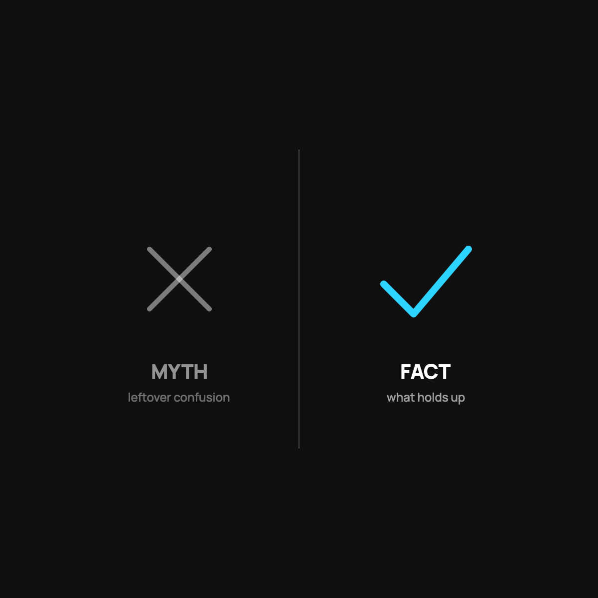

Health Sharing: Myths vs. Facts
Sorting the fair worries from the leftover confusion, honestly, including the myth that's half true.
Most health sharing myths fall apart under a plain look. It's not insurance, and that distinction matters. CrowdHealth's community has funded more than 45,000 bills, including single bills over $600,000. Its limits are stated, not hidden. It fits families, the self-employed, and early retirees, not just healthy singles. The fair worries are handled by reading the rules and keeping $500 on hand.

Health sharing sounds strange the first time you hear it, so it collects myths the way a screen door collects dust. Some of the worries are fair. Some are just leftover confusion. Let us sort the real from the noise, honestly, including the ones where the myth is actually pointing at something true.
Myth: "It's just cheap insurance."
Fact: it is not insurance at all, and that distinction matters. Insurance is a legal contract with a company that profits by paying out less. Health sharing is a community that agrees to fund each other's eligible bills, run by a company that earns a flat fee, not a cut of your claims. Different structure, different incentives. I unpacked the insurance conflict.
Myth: "They'll never actually pay a big bill."
Fact: the community has funded more than 45,000 bills, including single bills over $600,000. Complete submissions get funded in about a week on average. The track record is real and public. The honest asterisk: because it is not insurance, funding is not legally guaranteed. Strong history, not an ironclad promise. Both halves are true, and you should hold both.
Myth: "There's a catch in the fine print."
Fact: there are limits, and they are not hidden, they are just real. Pre-existing conditions have waiting rules. Dental, vision, cosmetic work, and a handful of other things are not eligible. If you want the model to work, you read the guidelines first. That is not a catch, that is doing your homework, same as you would with any plan.
Myth: "It's only for young, healthy singles."
Fact: families use it, and so do self-employed people and early retirees who are not yet on Medicare. What actually matters is not your age, it is whether you are relatively healthy, can keep $500 on hand for an event, and do not need guaranteed coverage for an ongoing condition. I wrote the honest fit test.
Myth: "If I get sick, I'm on my own with the hospital."
Fact: you actually get more human help, not less. Every member has a care advocate, a real person who helps you find care and, crucially, negotiates your bills down before anything is crowdfunded. Cash-pay discounts commonly run 25 to 85 percent off the list price. Most insurance plans do not give you a person whose job is to shrink your bill.
The one myth that is half true
"You have to trust strangers." Yes, you do, a little. But look closer at what you have now. You already trust strangers at an insurance company whose bonus goes up when your claim gets denied. Health sharing asks you to trust a crowd whose only job is to help, run by a company that does not profit from saying no. If you are going to trust strangers either way, trust the ones who are not playing against you.
The takeaway
Most health sharing myths fall apart under a plain look: it is not insurance, it has a real track record on big bills, its limits are stated not hidden, and it fits more people than the stereotype suggests. The fair worries, no legal guarantee and real exclusions, are things you manage by reading the rules and keeping $500 on hand, not reasons to dismiss it.
Questions I get about this
Is health sharing a scam?
No. It's real, legal, and has a public track record: tens of thousands of bills funded, some over $600,000, usually within about a week. What it isn't is insurance. There's no legal guarantee, so read the guidelines and keep your $500 ready. I go deeper in Is Health Sharing Legit?.
Is health sharing only for religious people?
Not CrowdHealth. Unlike faith-based sharing ministries, it has no statement of faith or church requirement. What matters is being relatively healthy, keeping $500 on hand, and not needing guaranteed coverage for an ongoing condition.
Do I lose the help of a real person if I leave insurance?
You get more of it. Every member has a care advocate, a real human who finds care and negotiates bills down before anything is crowdfunded. Most insurance plans don't give you a person whose job is to shrink your bill.
Want to read the guidelines and see your own cost? Use my code NORMAL: check CrowdHealth (opens in a new tab). New members get their first 3 months at $99 a month with code NORMAL.
My family of four uses CrowdHealth and I really believe in the model. If you join through my discount link (opens in a new tab) (code NORMAL), you get your first 3 months at $99 a month, and Normaltown USA earns a referral bonus if you stick around. It costs you nothing extra, and I only refer you to things I would tell a friend about. Health sharing is not insurance, and nothing here is medical, tax, or financial advice.

Written by David Dewese
Normal guy with a full-time job, wife, and kids. Spent twenty years pursuing music and creative ventures before starting a family. Sharing tips and tricks on how to thrive while living on an artist's income. Not a financial advisor. More about me.
New here?
Normaltown USA is plain-English money and healthcare help for normal people, written by a regular guy with a family of four. No jargon, no hype. Start here, or read the FAQ.